Ejercicios y problemas de Inferencia estadística
1En cierto barrio se quiere hacer un estudio para conocer mejor el tipo de actividades de ocio que gustan más a sus habitantes. Para ello van a ser encuestados 100 individuos elegidos al azar.
1Explicar qué procedimiento de selección sería más adecuado utilizar: muestreo con o sin reposición. ¿Por qué?
2Como los gustos cambian con la edad y se sabe que en el barrio viven 2.500 niños, 7.000 adultos y 500 ancianos, posteriormente se decide elegir la muestra anterior utilizando un muestreo estratificado. Determinar el tamaño muestral correspondiente a cada estrato.
2Sea la población de elementos: {22,24, 26}.
1Escriba todas las muestras posibles de tamaño dos, escogidas mediante muestreo aleatorio simple.
2Calcule la varianza de la población.
3Calcule la varianza de las medias muestrales.
3La variable altura de las alumnas que estudian en una escuela de idiomas sigue una distribución normal de media 1,62 m y la desviación típica 0,12 m. ¿Cuál es la probabilidad de que la media de una muestra aleatoria de 100 alumnas sea mayor que 1.60 m?
4Se ha tomado una muestra de los precios de un mismo producto alimenticio en 16 comercios, elegidos al azar en un barrio de una ciudad, y se han encontrado los siguientes precios:
95, 108, 97, 112, 99, 106, 105, 100, 99, 98, 104, 110, 107, 111, 103, 110.
Suponiendo que los precios de este producto se distribuyen según una ley normal de varianza 25 y media desconocida:
1¿Cuál es la distribución de la media muestral?
2Determine el intervalo de confianza, al 95%, para la media poblacional.
5La media de las estaturas de una muestra aleatoria de 400 personas de una ciudad es 1,75 m. Se sabe que la estatura de las personas de esa ciudad es una variable aleatoria que sigue una distribución normal con varianza σ2 = 0,16 m2.
1Construye un intervalo, de un 95% de confianza, para la media de las estaturas de la población.
2¿Cuál sería el mínimo tamaño muestral necesario para que pueda decirse que la verdadera media de las estaturas está a menos de 2 cm de la media muestral, con un nivel de confianza del 90%?
6Las ventas mensuales de una tienda de electrodomésticos se distribuyen según una ley normal, con desviación típica 900 €. En un estudio estadístico de las ventas realizadas en los últimos nueve meses, se ha encontrado un intervalo de confianza para la media mensual de las ventas, cuyos extremos son 4 663 € y 5 839 €.
1¿Cuál ha sido la media de las ventas en estos nueve meses?
2¿Cuál es el nivel de confianza para este intervalo?
7Se desea estimar la proporción, p, de individuos daltónicos de una población a través del porcentaje observado en una muestra aleatoria de individuos, de tamaño n.
1Si el porcentaje de individuos daltónicos en la muestra es igual al 30%, calcula el valor de n para que, con un nivel de confianza de 0,95, el error cometido en la estimación sea inferior al 3,1%.
2Si el tamaño de la muestra es de 64 individuos, y el porcentaje de individuos daltónicos en la muestra es del 35%, determina, usando un nivel de significación del 1%, el correspondiente intervalo de confianza para la proporción de daltónicos de la población.
8En una población una variable aleatoria sigue una ley normal de media desconocida y desviación típica 2.
1Observada una muestra de tamaño 400, tomada al azar, se ha obtenido una media muestra al igual a 50. ¿Calcule un intervalo, con el 97 % de confianza, para la media de la población.
2Con el mismo nivel de confianza, ¿qué tamaño mínimo debe tener la muestra para qué la amplitud del intervalo que se obtenga sea, como máximo, 1?
9Una marca de nueces afirma que, como máximo, el 6% de las nueces están vacías. Se eligieron 300 nueces al azar y se detectaron 21 vacías.
1Con un nivel de significación del 1%, ¿se puede aceptar la afirmación de la marca?
2Si se mantiene el porcentaje muestral de nueces que están vacías y 1-α = 0.95, ¿qué tamaño muestral se necesitaría para estimar la proporción de nueces con un error menor del 1% por ciento?
10La duración de la bombillas de 100 W que fabrica una empresa sigue una distribución normal con una desviación típica de 120 horas de duración. Su vida media está garantizada durante un mínimo de 800 horas. Se escoge al azar una muestra de 50 bombillas de un lote y, después de comprobarlas, se obtiene una vida media de 750 horas. Con un nivel de significación de 0,01, ¿habría que rechazar el lote por no cumplir la garantía?
- 1
- 2
- 3
- 4
- 5
- 6
- 7
- 8
- 9
- 10
Ejercicio 1 resuelto
En cierto barrio se quiere hacer un estudio para conocer mejor el tipo de actividades de ocio que gustan más a sus habitantes. Para ello van a ser encuestados 100 individuos elegidos al azar.
Soluciones:1Explicar qué procedimiento de selección sería más adecuado utilizar: muestreo con o sin reposición. ¿Por qué?
Todas las fórmulas que hemos estudiado de teoría del muestreo y de inferencia estadística presuponen que las poblaciones son infinitas o que, si no lo son, el muestreo aleatorio se realiza con reposición.
2Como los gustos cambian con la edad y se sabe que en el barrio viven 2.500 niños, 7.000 adultos y 500 ancianos, posteriormente se decide elegir la muestra anterior utilizando un muestreo estratificado. Determinar el tamaño muestral correspondiente a cada estrato.
Para efectuar un muestreo aleatorio estratificado, será necesario que la muestra refleje fielmente los estratos existentes en la población; deben considerarse los estratos formados por: niños, adultos y ancianos.
El tamaño muestral de cada estrato deberá ser proporcional a la presencia del mismo en la población original:
Población total: 2500 + 7000 + 500 = 10 000.
Ejercicio 2 resuelto
Sea la población de elementos: {22,24, 26}.
Soluciones:1Escriba todas las muestras posibles de tamaño dos, escogidas mediante muestreo aleatorio simple.
M1 = {22, 24}, M1 = {22, 26}, M1 = {24, 26}
2Calcule la varianza de la población.
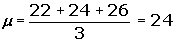
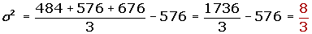
3Calcule la varianza de las medias muestrales.
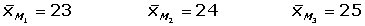
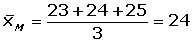
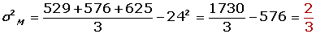
Ejercicio 3 resuelto
La variable altura de las alumnas que estudian en una escuela de idiomas sigue una distribución normal de media 1,62 m y la desviación típica 0,12 m. ¿Cuál es la probabilidad de que la media de una muestra aleatoria de 100 alumnas sea mayor que 1.60 m?
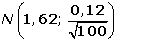
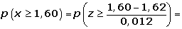
Ejercicio 4 resuelto
Se ha tomado una muestra de los precios de un mismo producto alimenticio en 16 comercios, elegidos al azar en un barrio de una ciudad, y se han encontrado los siguientes precios:
95, 108, 97, 112, 99, 106, 105, 100, 99, 98, 104, 110, 107, 111, 103, 110.
Suponiendo que los precios de este producto se distribuyen según una ley normal de varianza 25 y media desconocida:
Soluciones:1¿Cuál es la distribución de la media muestral?
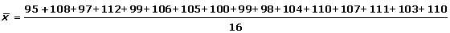
2Determine el intervalo de confianza, al 95%, para la media poblacional.
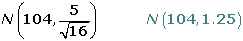
95% → zα/2 =1.96
(104 - 1.96 · 1. 25, 104 + 1.9 · 1.25) = (101.55; 106.45)
Ejercicio 5 resuelto
La media de las estaturas de una muestra aleatoria de 400 personas de una ciudad es 1,75 m. Se sabe que la estatura de las personas de esa ciudad es una variable aleatoria que sigue una distribución normal con varianza σ2 = 0,16 m2.
Soluciones:1Construye un intervalo, de un 95% de confianza, para la media de las estaturas de la población.
n=400 x =1.75 σ=0.4
1- α=0.95 z α/2=1.96
(1.75 ± 1.96 · 0.4/20 ) → (1.7108,1.7892)
2¿Cuál sería el mínimo tamaño muestral necesario para que pueda decirse que la verdadera media de las estaturas está a menos de 2 cm de la media muestral, con un nivel de confianza del 90%?
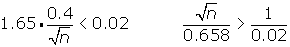
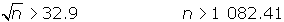
La muestra debe tener al menos 1083 personas.
Ejercicio 6 resuelto
Las ventas mensuales de una tienda de electrodomésticos se distribuyen según una ley normal, con desviación típica 900 €. En un estudio estadístico de las ventas realizadas en los últimos nueve meses, se ha encontrado un intervalo de confianza para la media mensual de las ventas, cuyos extremos son 4 663 € y 5 839 €.
Soluciones:1¿Cuál ha sido la media de las ventas en estos nueve meses?
n = 9 x = (4663 + 5839) / 2; x =5251
2¿Cuál es el nivel de confianza para este intervalo?
E= ( 5839 - 4663) / 2 = 588
588 = z α/2 · 900 / 3 z α/2 = 1.96
1-α = 0.95 → 95%
Ejercicio 7 resuelto
Se desea estimar la proporción, p, de individuos daltónicos de una población a través del porcentaje observado en una muestra aleatoria de individuos, de tamaño n.
Soluciones:1Si el porcentaje de individuos daltónicos en la muestra es igual al 30%, calcula el valor de n para que, con un nivel de confianza de 0,95, el error cometido en la estimación sea inferior al 3,1%.
1- α=0.95 z α/2=1.96
Al menos 840 individuos.
2Si el tamaño de la muestra es de 64 individuos, y el porcentaje de individuos daltónicos en la muestra es del 35%, determina, usando un nivel de significación del 1%, el correspondiente intervalo de confianza para la proporción de daltónicos de la población.
α=0.01 1- α=0.99 z α/2=2.575
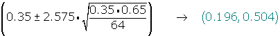
Ejercicio 8 resuelto
En una población una variable aleatoria sigue una ley normal de media desconocida y desviación típica 2.
Soluciones:1Observada una muestra de tamaño 400, tomada al azar, se ha obtenido una media muestra al igual a 50. ¿Calcule un intervalo, con el 97 % de confianza, para la media de la población.
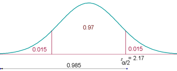
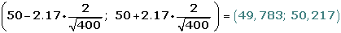
2Con el mismo nivel de confianza, ¿qué tamaño mínimo debe tener la muestra para qué la amplitud del intervalo que se obtenga sea, como máximo, 1?
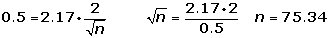
n ≥ 76
Ejercicio 9 resuelto
Una marca de nueces afirma que, como máximo, el 6% de las nueces están vacías. Se eligieron 300 nueces al azar y se detectaron 21 vacías.
Soluciones:1Con un nivel de significación del 1%, ¿se puede aceptar la afirmación de la marca?
1 Enunciamos las hipótesis nula y alternativa:
H0 : p ≤ 0.06
H1 : p >0.06
2Zona de aceptación
α = 0.01 zα = 2.33.
Determinamos el intervalo de confianza:
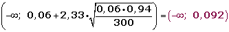
3Verificación.
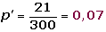
4Decisión
Aceptamos la hipótesis nula H0. Con un nivel de significación del 1%.
2Si se mantiene el porcentaje muestral de nueces que están vacías y 1-α = 0.95, ¿qué tamaño muestral se necesitaría para estimar la proporción de nueces con un error menor del 1% por ciento?
1 - α = 0, 9 5 z α/2 = 1, 96
Ejercicio 10 resuelto
La duración de la bombillas de 100 W que fabrica una empresa sigue una distribución normal con una desviación típica de 120 horas de duración. Su vida media está garantizada durante un mínimo de 800 horas. Se escoge al azar una muestra de 50 bombillas de un lote y, después de comprobarlas, se obtiene una vida media de 750 horas. Con un nivel de significación de 0,01, ¿habría que rechazar el lote por no cumplir la garantía?
1 Enunciamos las hipótesis nula y alternativa:
H0 : µ ≥ 800
H1 : µ <800
2Zona de aceptación
α = 0.01; zα = 2.33
Determinamos el intervalo de confianza:
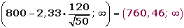
3Verificación.
x = 750
4Decisión
Rechazamos la hipótesis nula H0. Con un nivel de significación del 1%.
 Ejercicios
Ejercicios